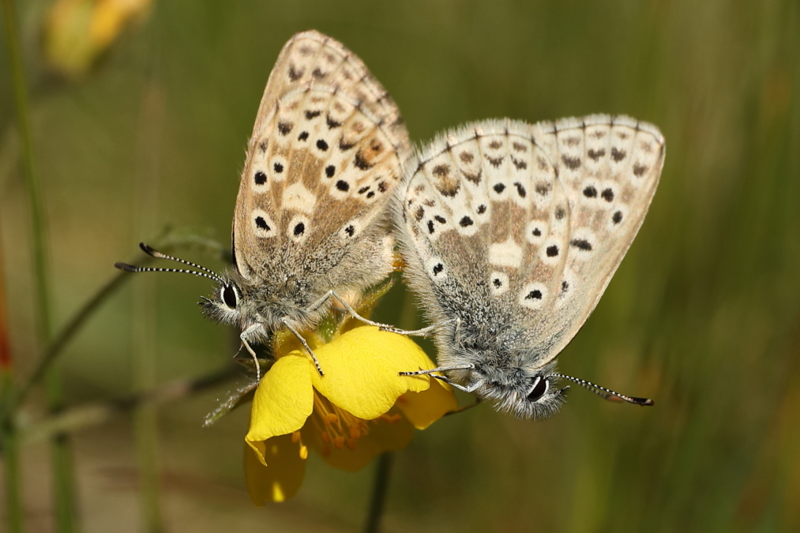

What is a systematic map?
A systematic map is a form of evidence synthesis. Evidence synthesis incorporates information from multiple sources to inform decisions on a specific issue using techniques like systematic reviews and meta-analysis. Unlike systematic reviews or meta-analyses that aim to answer specific questions related to impacts or effectiveness of different management decisions and policies, systematic maps aim to describe the state of evidence bases.
Systematic maps can be used to highlight knowledge gaps and knowledge clusters, helping to direct efforts towards funding and conducting necessary primary research. The output of a systematic map is a searchable database of studies on a broad subject, which can be a jumping off point for future, more in-depth systematic reviews and meta-analyses on knowledge clusters identified through the mapping process.
 To map the state of the evidence on global insect trends, we are organizing a community-driven systematic mapping project guided by a core group of subject experts and research synthesis experts. The final product of this project will be a global, multi-lingual map of all known studies, published and unpublished, that document evidence of insect population and biodiversity trends over time.
To map the state of the evidence on global insect trends, we are organizing a community-driven systematic mapping project guided by a core group of subject experts and research synthesis experts. The final product of this project will be a global, multi-lingual map of all known studies, published and unpublished, that document evidence of insect population and biodiversity trends over time.
For an example of a recent systematic map, we suggest browsing through Cheng et al. (2019). A systematic map of evidence on the contribution of forests to poverty alleviation. Environmental Evidence, 8:3.